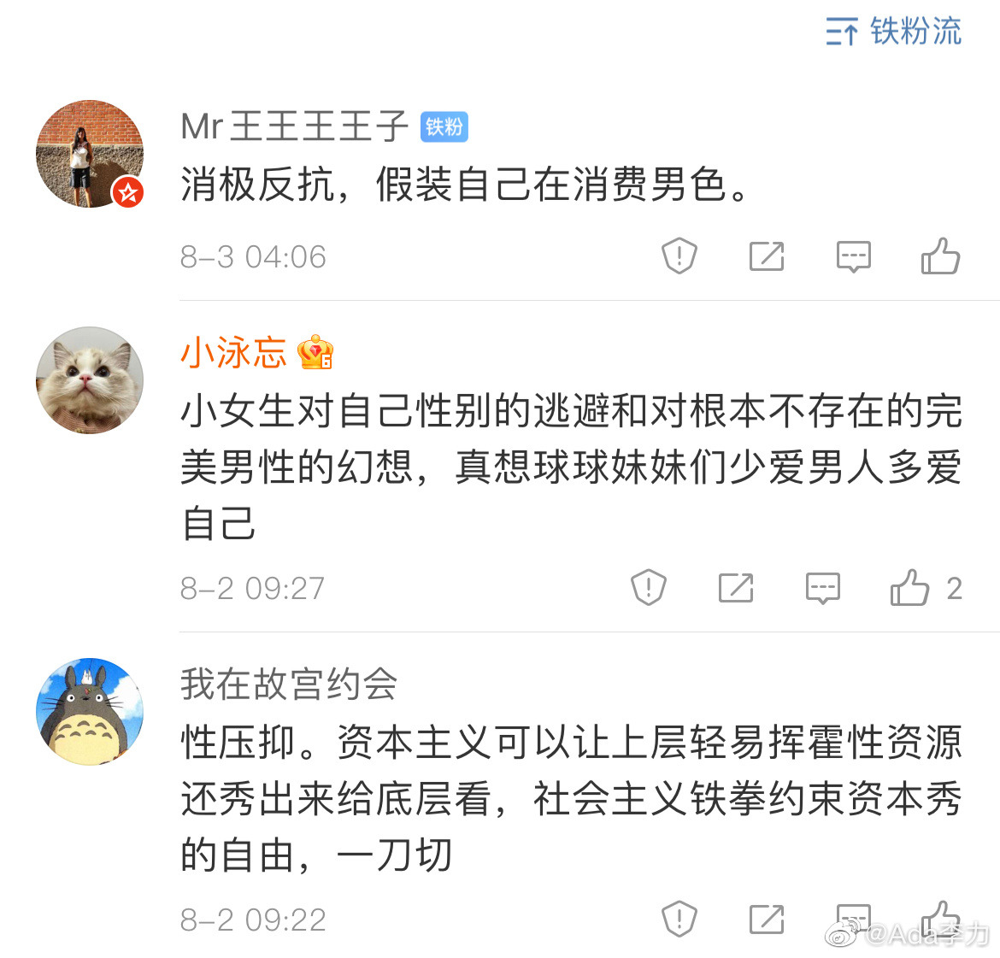

耽美跟男同性恋根本不是一回事。没搞清这个区别，评论都会说不到点子上。
@Ada李力:
#不明所以#
问了个问题，国内耽美剧流行的原因？三个评论几乎把原因都说全了。
而我对这个事情的看法也是逐渐清晰起来的。
因为看《陈情令》很上头，几刷，还写了几万字的影评来出坑。所以很奇怪自己这个年龄为什么会对这个我觉得没那么精致的电视剧那么上瘾。
发现已经有学者分析过这个现象。已经有自我意识的很多女性，在现有的艺术作品里找不到她们所向往的那种平等的感情，所以自己创作。耽美网文的作者几乎都是女性，而网文改编出来的动画片以及影视剧的观众也大部分都是女性。整个耽美文化是女性愉悦自己的一种创作。
那第2个问题就出来了，为什么要选两个男性当恋爱双方？异性恋为什么就让大家看不下去？
这里面的原因很复杂。异性恋势必涉及到女性绕不过去的生育，以及随之而来的各种社会压力。俩男人谈恋爱就没这问题。还有一个是厌女文化，女性的雄性化并没有太多受众，而男性阴柔化则还是是有人欣赏的，实际上雌雄同体也是个趋势，但厌女背景让女性扮演这样的雌雄同体角色，男观众并不喜欢看，女观众也不太接受。
看过导演李安的采访文章，他电影有个主题是反映中国文化下几千年的性压抑。老实说之前我不认为有什么性压抑。但现在看耽美剧和衍生的各种同人创作，实际上就是性压抑的反应。影视剧热播，主角都能成为顶流，是观众仅仅根据两个帅男的脸就脑中补出感情大戏，磕CP磕得不亦乐乎，有玻璃碴里找糖吃的戏谑，大概实际生活中实在是缺乏这样的糖了。
@Mr王王王王子 @小泳忘 @我在故宫约会
问了个问题，国内耽美剧流行的原因？三个评论几乎把原因都说全了。
而我对这个事情的看法也是逐渐清晰起来的。
因为看《陈情令》很上头，几刷，还写了几万字的影评来出坑。所以很奇怪自己这个年龄为什么会对这个我觉得没那么精致的电视剧那么上瘾。
发现已经有学者分析过这个现象。已经有自我意识的很多女性，在现有的艺术作品里找不到她们所向往的那种平等的感情，所以自己创作。耽美网文的作者几乎都是女性，而网文改编出来的动画片以及影视剧的观众也大部分都是女性。整个耽美文化是女性愉悦自己的一种创作。
那第2个问题就出来了，为什么要选两个男性当恋爱双方？异性恋为什么就让大家看不下去？
这里面的原因很复杂。异性恋势必涉及到女性绕不过去的生育，以及随之而来的各种社会压力。俩男人谈恋爱就没这问题。还有一个是厌女文化，女性的雄性化并没有太多受众，而男性阴柔化则还是是有人欣赏的，实际上雌雄同体也是个趋势，但厌女背景让女性扮演这样的雌雄同体角色，男观众并不喜欢看，女观众也不太接受。
看过导演李安的采访文章，他电影有个主题是反映中国文化下几千年的性压抑。老实说之前我不认为有什么性压抑。但现在看耽美剧和衍生的各种同人创作，实际上就是性压抑的反应。影视剧热播，主角都能成为顶流，是观众仅仅根据两个帅男的脸就脑中补出感情大戏，磕CP磕得不亦乐乎，有玻璃碴里找糖吃的戏谑，大概实际生活中实在是缺乏这样的糖了。
@Mr王王王王子 @小泳忘 @我在故宫约会
- 